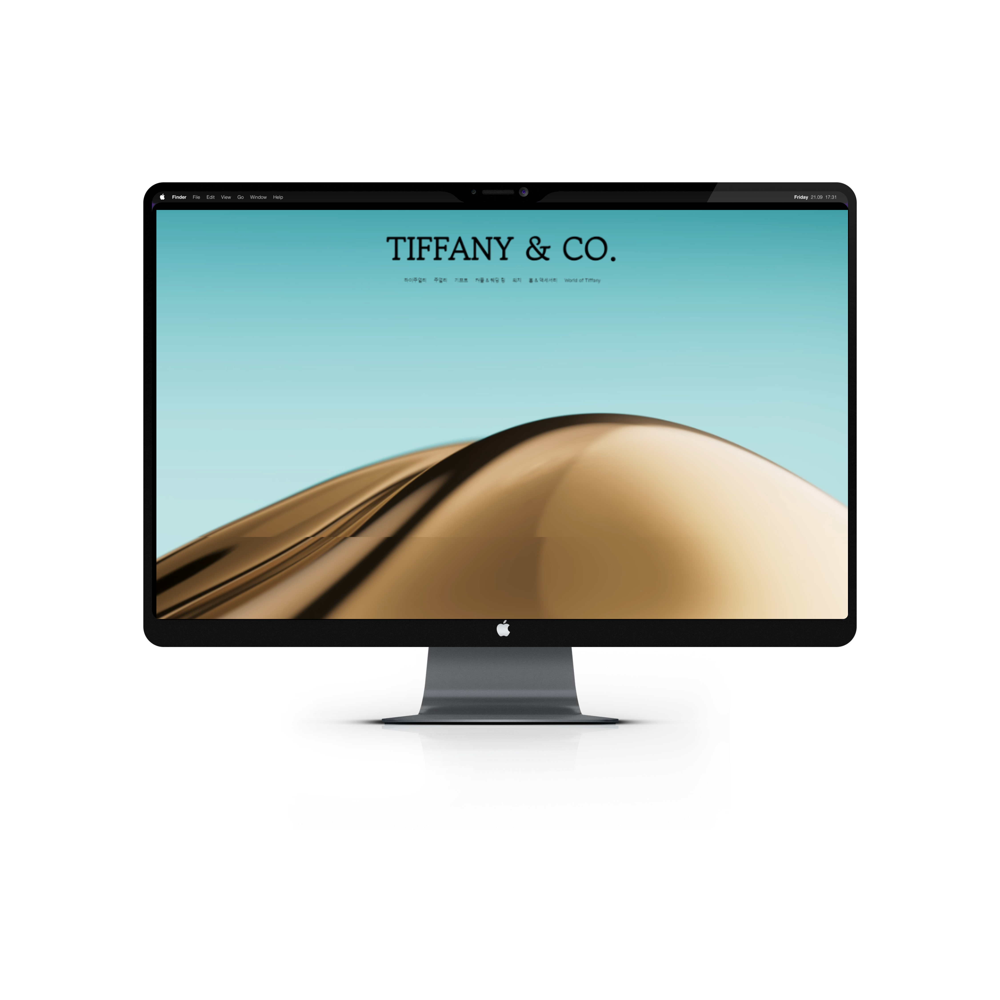

Portfolio
-

01 메인 포트폴리오 입니다.
리액트를 학습하며 제작한 데스크탑 페이지입니다.
리액트와 애니메이션 라이브러리 GSAP를 학습하며 제작한 데스크탑 페이지로, 두 기술을 활용하여 포트폴리오를 완성했습니다.
스크롤 기반 애니메이션: 사용자가 스크롤할 때 텍스트와 이미지에 자연스러운 애니메이션이 적용되도록 구현. 반응형 웹 디자인: 다양한 해상도에 맞춰 콘텐츠가 적절히 배치되고 최적화된 UX 제공. 컴포넌트 재사용성 강화: 리액트 컴포넌트를 활용하여 코드의 재사용성과 유지 보수성을 높임.
각 섹션에 GSAP 애니메이션을 적용하는 과정에서 충돌로 인해 페이지 로딩 문제가 발생했습니다. 이 문제를 해결하기 위해 AI 도구(GPT)와 공식 문서, 그리고 커뮤니티 자료를 적극 활용하며 문제를 분석하고 해결 방법을 찾았습니다. 이를 통해 애니메이션 간의 충돌을 최소화하고 페이지의 안정성을 개선할 수 있었습니다.
- React JS
- Tailwind.CSS
- GSAP
Category Source React Github Page -

02 네이버 개발자 센터
자바스크립트를 학습하면서 제작한 데스크탑 페이지입니다.
네이버 개발자 센터의 클론 코딩을 통해 프론트엔드 기술 숙련도를 향상시키고, 반응형 웹사이트 구현 경험을 쌓았습니다.
자바스크립트를 사용하여 슬라이드와 호버 이벤트를 구현했습니다
자바스크립트를 사용해 슬라이더를 구현했습니다. 이 과정에서 평소에 자주 사용하던 Swiper.js와 달리, 슬라이드의 동작 원리와 페이지네이션 및 내비게이션 기능에 대한 깊은 이해를 얻을 수 있었습니다. 이를 통해 슬라이더의 작동 원리뿐만 아니라, 기술적인 부분에 대해 더 깊이 생각하고 새로운 시각을 갖게 되는 기회가 되었습니다.
- 바닐라 자바스크립트
- 슬라이드 및 호버 이벤트 JS 사용
- 반응형 적용
Category Source html/css/JavaScript Github Page -

03 티파니앤코 온라인 스토어
자바스크립트를 학습하면서 제작한 데스크탑 페이지입니다.
평소 자주 방문하는 웹페이지의 기능을 직접 구현해보고 싶다는 동기로 프로젝트를 시작하게 되었습니다.
Swiper.js 없이 자바스크립트를 활용하여 "무한 루프"와 "페이지네이션" 기능을 구현한 커스텀 슬라이드를 개발했습니다. 네비게이션 바는 스크롤 위치에 따라 자동으로 활성화되도록 설정하여 사용자가 직관적으로 사이트 내에서 이동할 수 있도록 설계했습니다
자바스크립트로 슬라이더를 개발하는 과정에서 코드가 길어지고 복잡해지면서 많은 어려움이 있었습니다. 이러한 문제를 해결하기 위해 오류가 발생했을 때 AI 도구(GPT)와 구글링을 통해 해결 방법을 찾았으며, 코드에 주석을 추가하여 유지보수성과 가독성을 높이는 데 중점을 두었습니다.
- 바닐라 자바스크립트
- Tailwind CSS + 외부 CSS
- 슬라이드 자체제작 (jQuery 이용하지 않았음)
Category Source html/css/JavaScript Github Page -

04 Tving 티빙
리액트를 학습하며 제작한 데스크탑 페이지입니다.
Tving 플랫폼의 UI/UX를 분석하고, 실제 서비스와 동일한 사용자 경험을 제공하는 데 목표를 두어 개발하였습니다.
Tailwind CSS를 활용함으로써 클래스 네이밍의 복잡성을 줄이고, 코드 내에서 직접 스타일을 정의해 작업 효율을 크게 향상시켰습니다.
초기 셋팅부터 배포까지 모든 과정을 직접 진행한 프로젝트입니다.
React를 활용해 퍼블리싱 방식과 달리 컴포넌트 단위로 코드를 구조화하여 유지보수의 효율성을 높였습니다.
특히, 여러 슬라이드가 있는 페이지에서 발생한 다양한 버그와 오류를 해결하는 데 어려움이 있었지만, 컴포넌트를 나누어 작업함으로써 HTML로 작업하는 것보다 더 유연하게 문제를 관리할 수 있었습니다.
또한, 데이터를 관리할 때는 "JSON 파일"을 활용하여 "import"로 타이틀과 내용을 불러오는 방식을 사용해 코드의 가독성과 유지보수성을 크게 향상시켰습니다.- React JS
- Swiper.js
Category Source React Github Page
활용능력 Skills
-
Markup Languages
- HTML 5
- 웹 표준 / 접근성 준수
- PHP 환경에서 마크업 가능
-
Responsive Design
- Tailwind
- CSS 3 / SCSS
- 반응형 웹 (Media Query)
-
JavaScript & Frameworks
- JavaScript
- jQuery
- React
- GSAP
-
Version Control
- Git / GitHub
- 디자인 툴 사용 가능